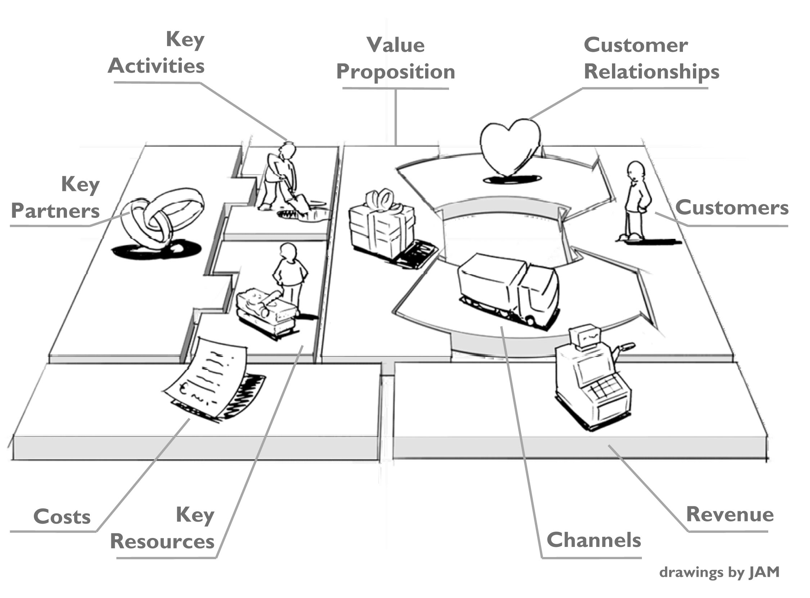

Kommunikation

Her skal der komme relevant tekst og billeder med underoverskrifter
Kvantitativ og Kvalitativ
Kvalitativ Metode
Kvantitativ er en metode man bruger, når man gerne vil have indblik i folks vaner f.eks. Det kan være man ringer til folk for at få dem til at svare på f.eks. hvad de synes om deres dagligvarebutik. Det kan også være man har et spørgeskema over nettet eller ansigt til ansigt. Denne metode er mest kendt som den klassiske markedsundersøgelses metode. Der er nogle forskellige måder at lave undersøgelser på ved denne metode, f.eks. er der spørgeskema over telefonen, også kendt som CATI (Computer Assisted Telephone Interviewing), dette er en generelt tidsbesparende proces, og det er en nem måde at sørge for at både svarpersonen og interwieveren forbliver forholdsvis anonyme for hinanden. Den anden måde er Ansigt til ansigt, også kendt som CAPI (Computer Assisted Personal Interview) ved denne form udføres interviewet ansigt til ansigt, og dermed har intervieweren mulighed for at aflæse svarpersonerne kropssprog. Løbende bliver svarene skrevet ned på computeren, for senere at blive skrevet ind som brugbare data. Der kan dog være nogle problemer ved denne form, da det kan være svært for intervieweren, at overskue samtalen når den ikke bliver skrevet ned og printet ud. Dog er det let for intervieweren at påvirker svarpersonen, både nonverbalt og verbalt. Og der er mulighed for, at hvis svar personen ikke kan svare på spørgsmålet via en skala fra 1-10, så kan man få et mundtligt svar i stedet for. Til sidst er der spørgeskema over nettet. Denne måde virker nemmere og mere tilforladeligt, men man får sjældent et ordentligt overblik over, hvem der reelt svare på ens spørgeskema, eller hvor alvorligt eller rigtige de svar man får ind er.
Kvalitativ Metode
I den kvalitative kommunikation, er det interview, fokusgrupper og også observationsstudier man fokusere på. Denne metode er også yderst anvendeligt i forbindelse med f.eks. test, eller når du planlægger at finde dit problem. Her undersøger man hvorfor folk egentlig gør som de gør. Der er nogle forskellige tilgangsmåder, man kan bruge kvalitativ metoder på. Observationsstudier Interview Fokusgrupper Det er vigtigt når man bruger kvalitativ metoder, at man gør sig overvejelser om, hvordan man vil opbevare sine oplevelser og fortolke dem og videreformidle dem.
Observationsstudier
Her tager man udgangspunkt i det ydre, altså det man kan se med det blotte øje. Hvordan f.eks. en testperson anvender en computer, om hun trykker hårdt på tasterne eller om hun er hurtigt ved tastaturet. Der er tre forskellige måder man, som observatør, kan deltage i denne form for undersøgelse, Totaldeltager Totalobeservør Deltagende observatør. Som totaldeltager, er man med i undersøgelse på lige vilkår med de andre, dette kan oftest give de bedste resultater, da de folk man undersøger ikke ændre adfærd under undersøgelsen. Som total observatører, er du blot tilstede og observere de mennesker der er med i undersøgelsen, dette kan dog være misvisende i sin undersøgelse, da deltagerne evt. kan ændre adfærd eller at du ikke får alle de oplysninger med, som du gerne ville have med. Til sidst er der deltagende observatør, her er du både med i undersøgelsen, men du observerer også på samme tid, og her kan du dermed miste vigtigt viden.
Interview
Dette er når man går i dybden med enkeltindividers meninger og holdninger. Et kvalitativt interview kan være mere eller mindre struktureret, da denne form oftest er en planlagt hændelse, da intervieweren oftest bør have en plan over hvor dette interview skal føre hen. Dog er et godt interview et, hvor man kan tage fat og bruge nogle af de ting, ens interviewperson selv bringer på banen. Dette er dog en meget tidskrævende og omkostningsfuld proces. Når du endeligt er færdigt med dit interview, skal du have det fortolket, og her er det meget vigtigt, at du går konkret til værk, og derfor ikke bare skriver det ned, du mener testpersonerne mener, men at du skriver det ned, som testpersonerne siger.
Fokusgrupper
Her har du oftest 3-8 personer der sidder sammen og diskuterer et emne. Der er både fordele og ulemper ved denne form for interview. Nogle af de fordele, der kan være, er at der kan komme nogle emner frem, som du ikke selv har tænkt på. En af de ulemper der dog også kan forekomme er at, personerne som du har sat sammen kan ende ud i en diskussion. Det kan også være svært at finder personer, som kan passe sammen i en fokusgruppe, og når man så endelig har fundet ens personer, så er det vigtigt, at man får dem til at føle sig velkommen og give dem en oplevelse af at deres indsats og formål i dette interview er væsentligt og at det bliver anerkendt.
Business Moder Canvas
Business Model Canvas er en forretningsmodel, der blev introduceret i 2010. Denne model blev lavet af Alexander Osterwalder. Modellen blev skabt for at skabe et større overblik over forholdene der er, mellem produkt, kunde og organisationer. BMC består af 9 forskellige sektioner. Kundesegment Værditilbud Kanaler Kunderelationer Indtægtsstrømme Nøgleressourcer Nøgleaktiviteter Nøglepartnere Omkostningsstruktur
Kundesegment
Dette er et meget basalt punkt for alle forretningsplaner, da man ikke kan have kunder uden at man har et bestemt segment man laver ens produkter til. Når man skal hvad fundet ens kundesegment, er det vigtigt at man finder ens kunde gruppes behov og skabe en forståelse overfor ens kunder. Der er forskellige segmenter man kan dele ens kunder op i. F.eks. er der massemarked, her bliver der skelnet mellem kundesegmenteringer. Værdi Propositioner, distributionskanaler og kundeforhold er alle segmenter der fokusere på store eller mindre kundegrupper, hvor store eller hvor små folks behov og problemer er.
Værditilbud
Værditilbud, det er grunden til at kunder henvender sig til et selskab over et andet, der er bedre til at løse den bestemte kunde gruppes problem eller behov. Ethvert værditilbud består af produktion, eller tjeneste, som imødekommer de forskellige krav, der bliver stillet af specifikke kundesegmenter. Dermed er dette en samlig af fordele, som en virksomhed kan tilbyde kunderne. Nogle af de fordele der kan være er f.eks. nyheder, hvis et firma har lanceret et nyt produkt som opfylder nogle behov hos deres kunder, som kunderne ikke vidste de havde.
Kanaler
Kanalerne er virksomhedernes byggesten til kommunikationen med kunderne og deres kundesegment. Disse kunde kanaler er berøringspunkt, som spiller en stor rolle i den kundeoplevelse virksomheden gerne vil give deres kunder. de er virksomhedernes kommunikation, distribution og salgslinjer. Her kan vi som multimediedesigner gøre en stor forskel for virksomhederne, ved at være den salgskanal som kan ramme kunderne, med en god hjemmeside med nogle gode reklamer for produkterne, som giver kunderne en fornemmelse af at, deres behov bliver dækket.
Kunderelationer
Relationerne til ens kundesegment er meget vigtig, derfor skal virksomheden også være sikker på, hvilket forhold de gerne vil etablere til deres segment. Som multimediedesigner kan vi igen gøre en forskel, vi kan nemlig etablere den relation mellem firma og kunder, i de segmenter man har valgt. Med denne relation kan det være med henblik på evt. mersalg eller fastholdning af ens kunder.
Indtægtsstrømme
Indtægtsstrømmen udgør hjertet af forretningsmodellen. Som virksomhed, skal man spørge sig selv om, hvilken værdi ens deres kundesegmenter er villige til at betale. Hvis man er succesfuld med dette, så er der større mulighed for at generere en eller flere forskellige indtægtsstrømme. Der kan være forskellige indtægts værdier, fra f.eks. aktion, forhandling, markeds afhængig og faste listepriser.
Nøgleressourcer
Ved enhver forretningsmodel kræves der nøgleressourcer. Med disse ressourcer, bliver det muligt for virksomhederne at opretholde de forhold de har med deres kundesegmenter, deres værditilbud, kanaler og dermed generere indtægter.
Nøgleaktiviteter
I enhver forretningsmodel er der nøgleaktiviteter og de er meget vigtige handlinger for virksomheden. De er ligesom nøgle ressourcerne, de er påkrævet at oprette og de tilbyder en værdi proposition, når markedet, vedligeholde af kunder forhold og laver en indtægt.
Nøglepartnere
Nøglepartnere er smedet sammen af virksomhedernes partnerskaber, af flere forskellige grunde, og disse partnerskaber bliver dermed en hjørnesten i mange forretningsmodeller. Med disse partnerskaber, opretter virksomhederne alliancer for at optimere deres forretningsmodel og de skaber også mindre risiko og skaffer flere ressourcer.
Omkostningsstruktur
Med denne byggesten, beskrives de vigtigste omkostninger, der kan opstå under driften af nogle forretningsmodeller. Oprettelsen af værdi og levering, eller opretholdelsen af kundeforhold og generering af indtægter, er alle påløbne omkostninger. Disse omkostninger kan beregnes relativt let efter definition af nøgleressourcer, aktiviteter og partnerskab. “No-frills” flyselskaber har f.eks. bygget forretningsmodeller udelukkende op omkring at have lave omkostningsstrukturer.
Brugertest
Brugertest, er en af de mest anerkendte usability-testmetode. Når man laver en brugertest, så er det for at se om folk kan finde rundt i ens hjemmeside, eller f.eks app. Der er oftest to formål med brugertest. Første formål kan være, at se hvad for en oplevelse brugeren får ud af at prøve hjemmesiden og om brugeren kan finde rundt på ens hjemmeside. Den anden er for at vise hvor ens problemer er på ens hjemmeside Den forskel der er, er om testen er til for at informere eller bekræfte. hvis du skal finde et problem er det vigtigt at du, både lader dig informere og bekræfte. Når man skal foretag en brugertest, skal man forberede sig. Brugertest er en ressourcekrævende proces, da man skal finde de rigtige testpersoner, man skal klargøre lokaler og planlægge spørgsmål. Et typisk forløb med brugertest forløber over 4 uger og der vil typisk være 3 faser man skal igennem. 1 fase, her bruger man 2-3 uger til at forberede sig, her laver man sit design af sin testopgave, sin pilot-test og finder sine rekrutter til sin test. 2 fase er hvor man gennemfører sin test 3 fase, her efterbehandler man sine data og man dokumentere. Det er vigtigt når man laver en brugertest, at man går op i hvad ens testpersoner siger, da det er deres meninger og deres oplevelser af ens hjemmeside, og hvad for nogle problemer der evt kan være med ens hjemmeside, der kan bruges til forbedring.